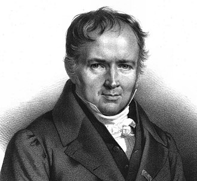

Siméon Denis POISSON
Poisson 1781'de Pithiviers'te doğdu. 1800'de girdiği Ecole Polytechnique'de 1802'de ders vermeye başaldı. 1806'da profesörlüğe, iki yıl sonra da Bureau des Longitudes'ta astronomluğa yükseldi. 1809'da Paris Fen Fakültesi profesörlüğüne, 1812'de Bilimler Akademisi'ne, 1837'de Bilimler Akademisi Yüksek Meclis Üyeliği'ne seçildi.

Poisson son yıllarını Fransız okullarındaki matematik programlarını düzenlemekle geçirdi.
Pür matematik alanında az sayıda da olsa araştırma yapmakla birlikte, çalışmalarını matematiğin fiziğe; özellikle elektrik, manyetiklik ve mekaniğe uygulamasında yoğunlaştırdı. 1824'te yayınladığı eseri, Memoire su la Théorie du Magnetisme (Magnetizma Kuramı Üzerine Muhtıra)'da, etki ile mıknatıslanmayı tanımlayarak magnetizma olayının açıklanmasına büyük katkıda bulundu.
Lagrange ve Laplace'ın gezegenlerin yörüngelerine dair kuramlarını genişletip, siferoit dipsoitlerin çekimlerini hesaplayarak ve gezegenlerin kütle çekimlerini, kütle dağılımları cinsinden hesaplamakta kullanılan bir yöntem bularak gök mekaniğine de katkıda bulundu.
Poisson'ı bir de istatistik alanındaki çalışmalardan biliyoruz. İstatistikte kullanılan önemli dağılımlardan biri Poisson adını taşımaktadır.